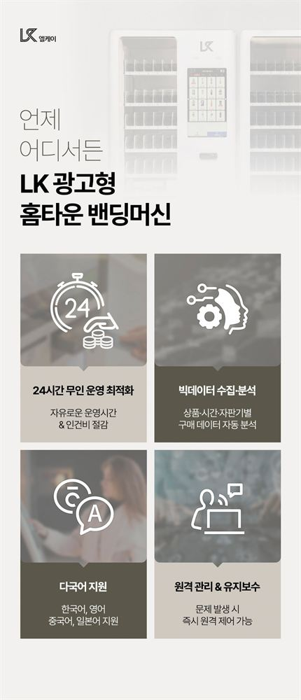

무인자판기 수익 계산 — 전기세·원가 다 빼면 한 대당 얼마 남을까

무인자판기를 알아보시는 분들이 가장 궁금해하는 건 결국 하나입니다. "그래서 한 대 놓으면 한 달에 얼마 남나요?" 인터넷에는 "월 100만원 순수익" 같은 이야기가 돌아다니지만, 정작 전기요금·상품 원가·수수료를 다 빼고 계산한 글은 찾기 어렵습니다. 이 글은 자판기 한 대의 매출에서 비용을 하나씩 빼 내려가는 방식으로 실제 남는 돈을 계산해 봅니다. 아래 숫자는 일반적인 범위를 잡은 예시이고, 실제 금액은 자리·품목·매입 단가에 따라 달라집니다.
1. 먼저 매출 — 자리가 90%입니다
자판기 수익을 결정하는 건 기계 성능이 아니라 어디에 두느냐입니다. 핵심은 유동인구가 아니라 머무는 시간입니다. 지나가는 사람 1,000명보다, 그 자리에 1시간 머무는 사람 100명이 훨씬 많이 삽니다.
• 사무실·공장 휴게실(상주 50~100명) — 월 40만~90만원대. 매일 반복 구매가 나와 매출이 안정적입니다.
• 아파트 단지·오피스텔 로비 — 월 50만~120만원대. 저녁·주말에 몰립니다.
• 헬스장·사우나·찜질방 — 월 30만~100만원대. 음료·이온음료 회전이 빠릅니다.
• 학원가·학교·PC방 — 월 50만~150만원대. 시간대가 뚜렷하고 단가는 낮습니다.
• 병원·요양원 로비 — 월 30만~80만원대. 보호자 대기 수요가 꾸준합니다.
• 캠핑장·펜션·관광지 — 계절 편차가 큽니다. 성수기에 몰아 벌고 비수기엔 거의 안 나옵니다.
• 단순 길가·상가 앞 — 기대보다 안 나오는 대표적인 자리입니다. 머무는 사람이 없기 때문입니다.
2. 자판기 종류별 전기요금 — 생각보다 작습니다
많이들 걱정하시는 전기세인데, 실제로는 수익을 좌우할 만한 크기가 아닙니다. 기종별 대략적인 월 전기요금 범위입니다.
• 상온 스낵·과자 자판기 — 조명과 제어부만 돌아가 월 5천~1만원 수준.
• 냉장 음료 자판기 — 압축기가 주기적으로 돌아 월 1만5천~3만원 수준.
• 냉동 아이스크림 자판기 — 영하 유지가 필요해 월 3만~5만원 수준.
• 화면형 스마트 자판기 — 디스플레이가 상시 켜져 같은 냉장 기종보다 조금 더 나옵니다.
주의할 점은 계절입니다. 한여름에는 냉장·냉동 기종의 압축기 가동 시간이 길어져 전기요금이 1.5배 안팎까지 올라갈 수 있습니다. 대신 그 시기가 매출도 가장 잘 나오는 때라 상쇄되는 편입니다. 자리를 고를 때 직사광선이 닿는 곳·실외기 옆을 피하면 전기요금과 고장 위험을 함께 줄일 수 있습니다.

3. 실제 계산 — 월 매출 100만원인 자판기 한 대
가장 흔한 경우인 냉장 음료 자판기, 월 매출 100만원을 기준으로 비용을 하나씩 빼 보겠습니다.
• 상품 원가 — 55만원 (매출의 55%). 가장 큰 비용이고, 매입처에 따라 50~65%까지 벌어집니다.
• 전기요금 — 2만5천원
• 카드·간편결제 수수료 — 1만원 안팎 (매출의 1% 내외)
• 통신비 — 1만원 안팎 (원격 관리용 데이터)
• 소모품·청소·이동 비용 — 1만~2만원
→ 비용 합계 약 60만5천원, 남는 돈 약 39만5천원
즉 매출의 대략 35~40%가 손에 남습니다. 여기서 상황에 따라 더 빠지는 것이 있습니다.
• 자리 임대료·수수료 — 남의 건물에 두는 경우 매출의 10~20%를 자리 주인에게 드리는 구조가 흔합니다. 15%면 15만원이 빠져 약 24만5천원이 남습니다.
• 기기 비용 — 구입이면 초기 목돈이 들어가는 대신 이후 부담이 없고, 렌탈·임대면 월 이용료가 매달 빠집니다. 기종마다 달라 상담 시 안내드립니다.
• 세금 — 부가세·소득세는 위 계산에 포함되어 있지 않습니다.
정리하면 자판기 한 대로 월 몇백만원은 현실적이지 않고, 자리가 좋은 한 대에서 20만~40만원이 현실적인 그림입니다. 이 사업이 커지는 방식은 한 대에서 크게 버는 게 아니라, 검증된 자리를 여러 개 확보해 대수를 늘리는 쪽입니다.
4. 직접 운영 vs 장소만 제공 — 어느 쪽이 나을까
• 직접 운영 — 기기를 두고 재고를 채우며 매출 전부를 가져갑니다. 수익은 가장 크지만 재고 보충·관리가 따라옵니다. 자리에 따라 주 1~2회 정도 손이 갑니다.
• 장소 제공형 — 자리만 빌려주고 매출의 일정 비율이나 정액 임대료를 받습니다. 손이 전혀 안 가는 대신 수익은 직접 운영보다 낮습니다. 건물주·매장 사장님이 많이 선택하는 방식입니다.
장소 제공형에서 가장 많이 다투는 지점이 전기요금입니다. 자판기 전기는 대개 건물 전기에 물리기 때문에, 계약할 때 정액으로 얼마를 부담할지 또는 별도 계량으로 실사용분만 정산할지를 명확히 정해 두셔야 나중에 얼굴 붉힐 일이 없습니다. 수수료율과 전기요금 부담을 묶어서 협의하는 게 깔끔합니다.

5. 부업·투잡으로 할 때 현실적인 조언
• 한두 대로 시작하세요. 첫 자리의 실제 매출을 2~3개월 보고 나서 늘리는 게 안전합니다. 처음부터 여러 대를 깔면 안 팔리는 자리의 재고까지 떠안게 됩니다.
• 원격 관리가 되는 기종을 고르면 헛걸음이 줄어듭니다. 재고와 매출을 휴대폰으로 보고, 채울 때가 됐을 때만 가면 됩니다.
• 유통기한이 짧은 품목은 초보에게 위험합니다. 음료·과자처럼 회전이 빠르고 기한이 긴 것부터 시작하는 편이 좋습니다.
• 매입처 단가가 곧 수익입니다. 원가 55%와 65%는 월 10만원 차이입니다. 대형마트 소매가로 채우면 남는 게 거의 없습니다.
• 겨울 대비를 미리 하세요. 냉장 음료만 두면 겨울에 매출이 떨어집니다. 온장 전환이 되는 기종이나 스낵 혼합 구성이 유리합니다.
어떤 품목이 맞을지 감이 안 잡히신다면 자판기 품목·무인창업 아이템 총정리를, 구입과 렌탈 중 무엇이 나을지 고민 중이시면 무인자판기 설치·임대·렌탈 선택 가이드를 함께 보시면 도움이 됩니다.
6. 자리부터 같이 봐 드립니다
H포스는 자판기만 갖다 놓고 끝내지 않습니다. 어떤 자리에 어떤 기종이 맞는지, 그 자리에서 어느 정도 매출이 기대되는지부터 함께 봐 드립니다. 음료·커피·스낵·아이스크림(냉동)·냉장·멀티, 화면형 스마트 자판기까지 기종을 갖추고 있고, 구입·렌탈·임대 중 상황에 맞는 방식을 고르실 수 있습니다. 카드·삼성페이·카카오페이·네이버페이·QR 결제를 모두 지원하고, 원격으로 재고와 매출을 확인할 수 있습니다. 설치비는 무료이며 전국 어디든 방문합니다.
상담·설치 신청
두실 자리(사무실·아파트·헬스장·학원·매장 앞 등)와 하루 이용 인원만 알려주시면, 기종·품목 구성·예상 수익을 무료로 잡아 드립니다. 설치비 0원, 신청 후 평균 4일 이내 전국 방문 설치입니다.
📞 무인자판기 수익·설치 상담 010-6832-1994